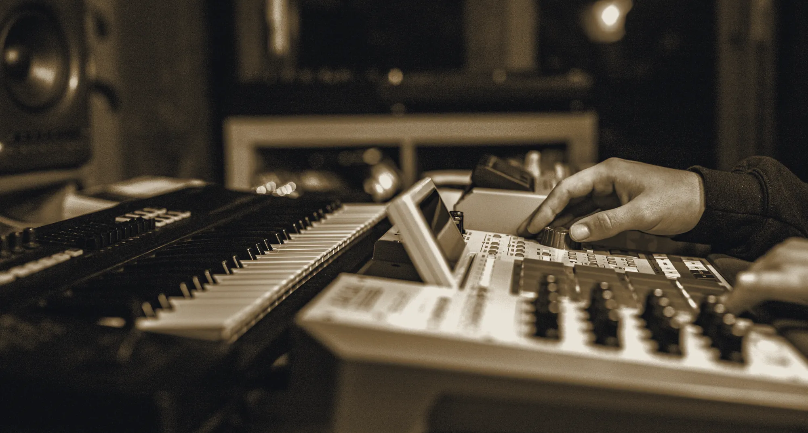

How it works
Stand at each point
and listen.
A synthesiser is four or five simple things in a row. Block diagrams explain the order; they do not explain the sound. Press a stage below and you will hear the chain exactly up to that point — nothing after it.
The chain
Each stage plays the same short phrase, so the only thing that changes is what has been added.
Four stages, one phrase, played live in your browser.

Learning by earThe only way that sticks
Why we bother
Nobody learns
from a diagram.
Every manual we grew up with drew the same four boxes and an arrow, and none of them told us what a filter actually does to a sawtooth. You find that out by opening one slowly while a note is held — which is exactly what the panel above lets you do.
Every instrument we make ships with its schematic, for the same reason.
Inside the workshop